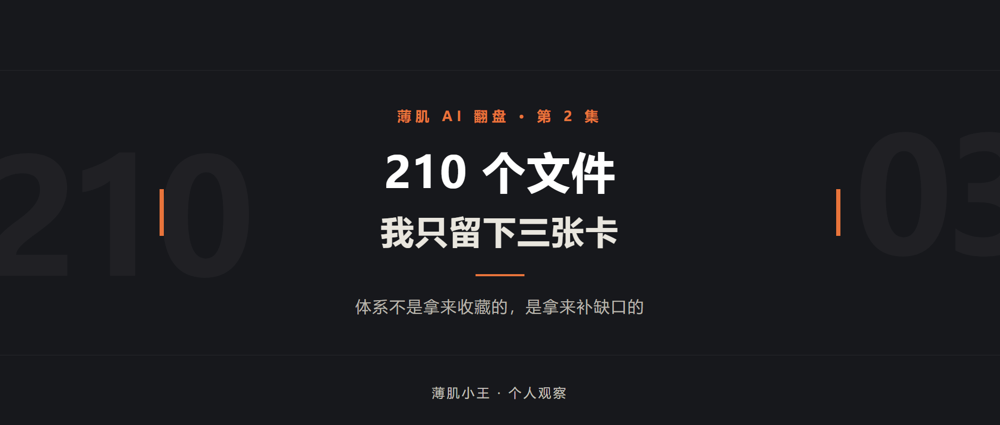
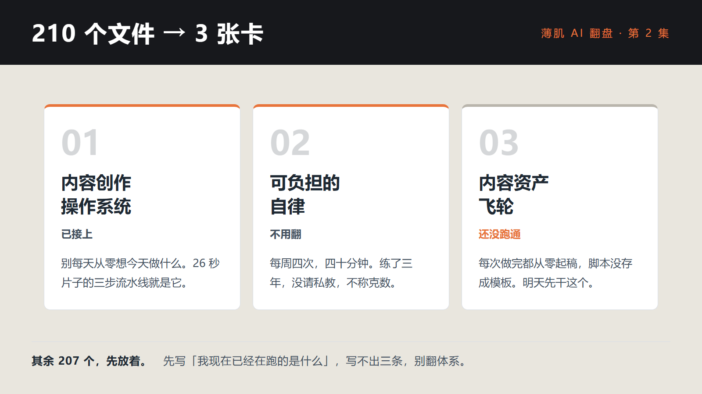

G 盘那个文件夹展开的时候，我数了一下：210 个文件。
三块。super_skill 39 个，个人知识库 162 个，工具包 skill 9 个。INDEX.md 里列着六个「超级系统」，光名字就够唬人：内容创作、信任、知识资产、成长、行动、变现。
我把拆解图拉出来看了一遍。
然后只挑了三张。
你大概以为我要讲这套东西多厉害。
不是。
其余的我没再点开。
那天我干的事挺笨的。先把三个 INDEX.md 挨个读完，再按目录数文件：02-内容创作 42 个，03-AI 43 个，05-创业搞钱 65 个，06-个人成长 7 个，04-理财投资只有 3 个。最后那块我扫一眼就跳过了——投资那块我本来就不碰。剩下的全导进一张图：三块的层级、每个领域多少张知识卡、八个工具 skill 怎么串成一条选题到变现的线，标得清清楚楚。
图挺漂亮。
漂亮到我发现一个问题：我不打算照着它活一遍。
不是包不好。是它太全了。
一套体系越完整，越是别人那条路走完之后的形状。它有起点、有中段、有闭环，环环相扣。可我已经在跑的东西不长那样：每周四个晚上练薄肌，四十分钟；一条 26 秒的片子从脚本到成片两小时不到，写脚本、渲染、发，三步。我没空从第一章重新来。
第一张我拿的是「内容创作操作系统」。名字很大，我把它翻成一句人话：别每天从零开始想今天做什么。这条已经接上了，那条 26 秒片子的三步就是它。
第二张是「可负担的自律」。这个不用翻。我练了三年，没请过私教，不称克数。
第三张叫「内容资产飞轮」。
这张我还没跑通。

我给自己定的动作很小：拿一张纸，写「我现在已经在跑的是什么」。
写不出三条，别翻体系。
写得出来，再去那 210 个文件里找能接上的那一张，其余先放着。别人的完整链路，接不上你已经在转的那点东西，就只是收藏夹里又多一个文件夹。
第三张我卡在同一个地方：每次做完都从零起稿，脚本没存成模板。
明天先干这个。